9.1.6.1 ...的安装 大容量堆叠器 (HCS) 和 配套堆叠器推车 
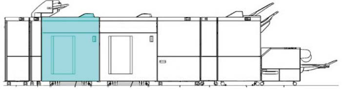
(图 1) ffw910010

用于 HCS 安装, CDM 需要在上游安装.
请参阅 9.1.6.2 关于安装 堆叠器推车 (附加选件).
产品代码
HCS
QD200145 [Revoria 按下 PC1120, Revoria 按下 E1136G, Revoria 按下 EC1100, Revoria 按下 SC180G]
LD200220 (FB 设置 代码) [ApeosPro C810G, Revoria 按下 EC1100, Revoria 按下 SC180G]
QD200145: HCS
EM100188 (FB: 选件): 电源线（3脚）
电源线（3脚）: EM100188 (FB), FBAP/WW (Differs 取决于 the market. 请参阅 6.2.4.1 )
型号 | 组合 | 产品代码 |
|---|---|---|
ApeosPro C810G Revoria 按下 PC1120, Revoria 按下 E1136G, Revoria 按下 EC1100, Revoria 按下 SC180G | I/F 电缆 (Middle 850 mm: CDM 模块 + HCS + HCS) | EM200289 (选件) |
ApeosPro C810G Revoria 按下 PC1120, Revoria 按下 E1136G, Revoria 按下 EC1100, Revoria 按下 SC180G | I/F 电缆 (2100 mm: CDM 模块 + HCS + HCS + 装订器 D6) | EM200398 (选件) |
ApeosPro C810G Revoria 按下 PC1120, Revoria 按下 E1136G, Revoria 按下 EC1100, Revoria 按下 SC180G | I/F 电缆 (EX 长: CDM 模块 + HCS + HCS + 装订器 D6) | ED201502 (选件) |
ApeosPro C810G Revoria 按下 PC1120, Revoria 按下 E1136G, Revoria 按下 EC1100, Revoria 按下 SC180G | I/F 电缆 (EX 长 4M: CDM 模块 + HCS + HCS + 装订器 D6) | ED201503 (选件) |
安装步骤
打开 the package 该 comes 使用 HCS 和 检查 bundled/separate order items.
HCS - 随附物品 (图 2)
编号
名称
数量
1
滑槽 导轨 (用于 use 和/与 装订器 D6, 等.)
1
2
Earth 板
2
3
电源线 Protector 支架
1
4
对接 板
1
5
电缆 Duct
1
6
Tapping 螺钉 (M4)
8
7
螺钉(M3)
2
8
电源线 (选件)
1
9
I/F 电缆 (短路) (选件)
1
10
I/F 电缆 (Middle) (选件) (HCS + HCS)
1
11
I/F 电缆 (EX 长) (选件) (用于 subsequent 设备 这样的 as 装订器 D6)
1
那里 是 编号 示意图 notations 用于 编号 8 to 11.
那里 是 编号 示意图 notations 用于 编号 8 to 11.
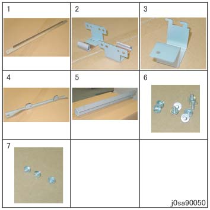
(图 2) sa90050
堆叠器推车 (Cart 用于 大容量堆叠器) - 随附物品 (图 3)
编号
名称
数量
1
Caster
1
2
Handle
1
3
堆叠器 纸盘 (bundled in the HCS)
1
4
Clamper
1
5
螺钉 (Hexagonal 螺栓)
4
6
盖板
1
7
Holder
1
8
导轨
2
9
螺钉(M3x6)
8
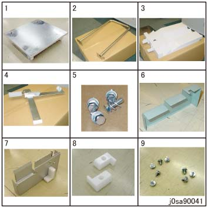
(图 3) sa90041
关闭IOT主机和打印服务器, 拔掉电源.
用于 如何 to 关闭电源, 请参阅 the 维修 手册 用于 IOT 和 打印服务器.
Peel 关闭/脱离 the securing tapes 从 the HCS. (图 4)
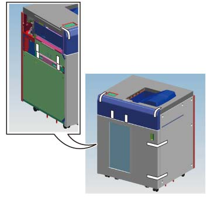
(图 4) saw910001
打开 the 上方 盖板 和 peel 关闭/脱离 the securing tapes. (图 5)
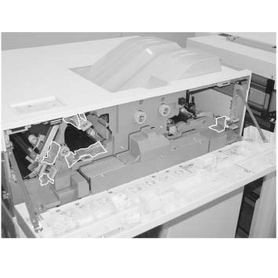
(图 5) saw910002
打开 the 前面 门 和 拆卸 protective material. (图 6) (图 7)
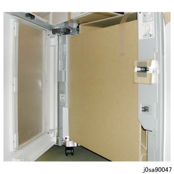
(图 6) sa90047
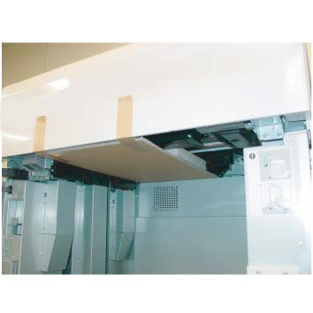
(图 7) saw910003
Trace the tube (x4) 和 拆卸螺钉（x4）. (图 8)
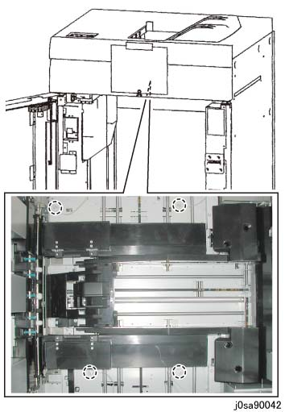
(图 8) sa90042
拆卸 锁定 Guard. (图 9)
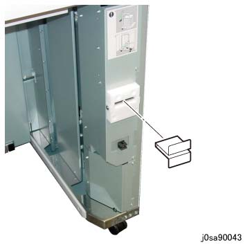
(图 9) sa90043
当...时 connecting a subsequent 设备 (例如. HCS, 装订器 D6), 拆卸 Blind 盖板 和 安装 滑槽 导轨 to 输出 章节 的 HCS.
拆卸螺钉 (M4: x6). (图 10)
拆卸螺钉 (M3:x2). (图 10)
拆卸 HCS 右侧 盖板. (图 10)
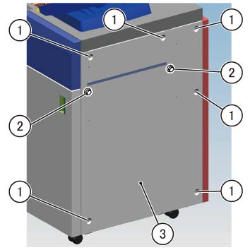
(图 10) saw910004
拆卸螺钉 (M3: x3) 的 Blind 盖板. (图 11)
拆卸 Blind 盖板. (图 11)
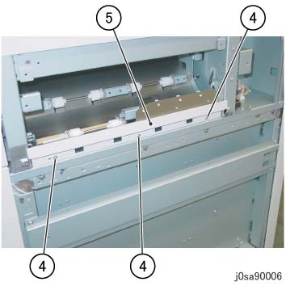
(图 11) sa90006
Store the removed Blind 盖板 by reusing the 螺钉 (M3: x2) 该 已 removed in 步骤 (4). (图 12)
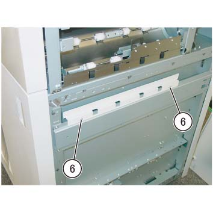
(图 12) saw910005
安装 HCS 右侧 盖板 和 固定 it 和/与 螺钉 (M4: x6). (图 13)
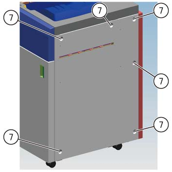
(图 13) saw910006
安装 滑槽 导轨. (图 14)
位置 the notch so 该 it is facing the HCS 右侧 盖板 侧面.
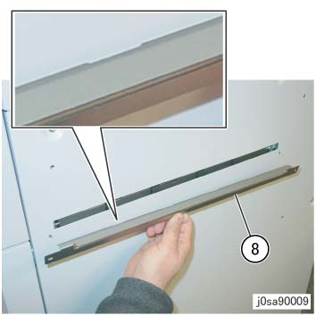
(图 14) sa90009
固定 滑槽 导轨 使用 螺钉 (M3: x2) 该 已 removed in 步骤 (2). (图 15)
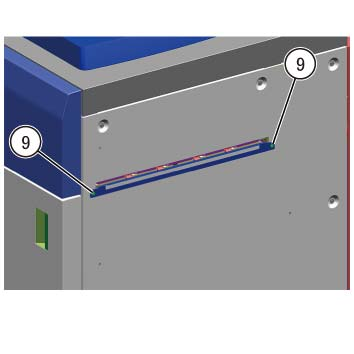
(图 15) saw910007
当...时 connecting 到 subsequent 设备 (例如. HCS), 安装 对接 板 provided 使用 HCS 到 第一个 HCS, 和 固定 it 和/与 螺钉 (M4x16: x2). (图 16)
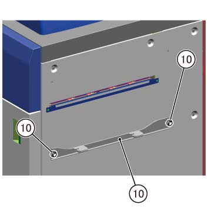
(图 16) saw910008
当...时 connecting 到 subsequent 设备 (例如. 装订器 D6), 安装 对接 板 该 came 和/与 装订器 D6 安装 Kit 到 HCS 和 固定 it 和/与 螺钉 (M4x16: x2). (图 17)
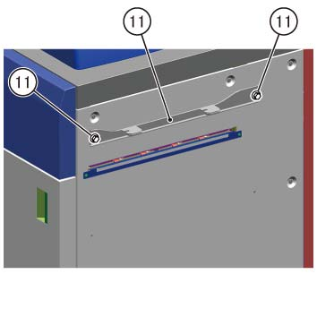
(图 17) saw910009
安装 Earth Plates 到 HCS. (图 18)
安装 Earth 板 (前面 侧面/后面 侧面: x2) 到 HCS.
固定 the Earth 板 使用 Tapping 螺钉 (M4: x4) provided.
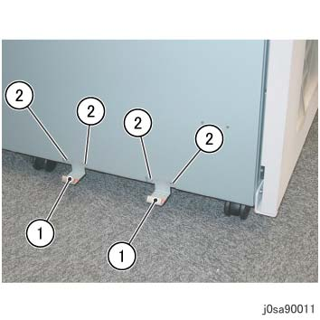
(图 18) sa90011
拆卸 HCS 后面 盖板. (图 19)
拆卸螺钉 (M4: x4).
拆卸后盖板.
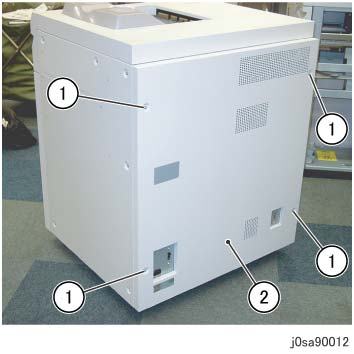
(图 19) sa90012
安装 电缆 Duct. (图 20)
Loosely affix the Tapping 螺钉 (M4: x2) provided in the bundle.
安装 电缆 Duct 和 固定 it 和/与 螺钉 (M4: x2).
当...时 connecting a subsequent 设备 (例如. HCS, 装订器 D6), 通过 the I/F 电缆 和 电源线 通过 电缆 Duct in advance.
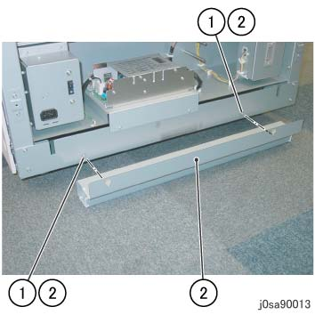
(图 20) sa90013
安装 对接 板 到 上游 模块. (图 21)
安装 对接 板 at 左侧 的 上游 模块.
固定 the 对接 板 使用 Tapping 螺钉 (M4: x2) provided.
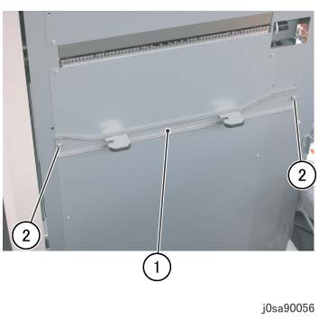
(图 21) sa90056
对齐 hooks 的 上游 模块 对接 板 到 对接 slots 的 HCS 和 push it in 直到 they 锁定. (图 22)
同时, visually 确认 the gasket 的 Earth 板 seals properly 和/与 编号 gap.
If 那里 is 任何 gap in the Earth 板 和 it 不 seal properly, or 如果 hooks 的 上游 模块 对接 板 请勿 match the 高度 的 对接 slots 的 HCS, 执行 步骤 11 to 调整 高度 的 HCS Caster.
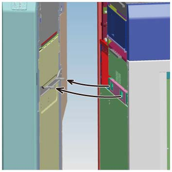
(图 22) saw910010
Use the wrench 该 comes 使用 上游 模块 to 调整 高度 的 HCS Caster as 所需的.
拆卸螺钉 从 the 上游 模块 to extract the wrench. (图 23)

(图 23) cd910014
前面 Caster. (图 24)
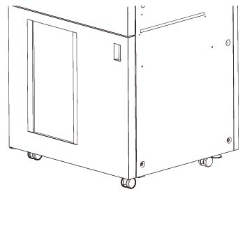
(图 24) saw910019
后面 Caster. (图 25)
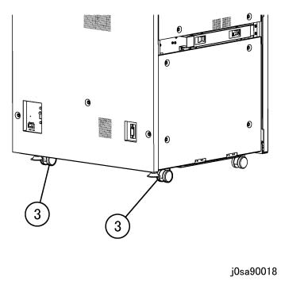
(图 25) sa90018
Use the wrench to 松开 the Securing 螺母. (图 26)
Use the wrench to 转动 Hexagonal 螺栓 和 调整 高度. (图 26)
Use the wrench to 拧紧 the Securing 螺母. (图 26)
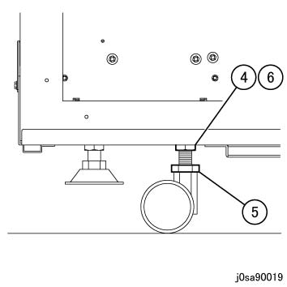
(图 26) sa90019
固定 the Latch Stopper 的 HCS. (图 27)
固定 the Latch Stopper 和/与 螺钉 (M3: x1) 从 the bundle.
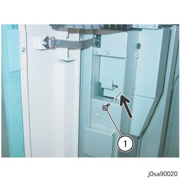
(图 27) sa90020
固定 the HCS by 其 feet (x2 位置 在后面). (图 28)
By using the wrench 该 comes 使用 上游 模块, 旋转 the Hexagonal 调整 螺栓 直到 the feet 是 touching the 接地, 和 加上 an extra 半/一半 转动 to 每个.
Use the wrench to 拧紧 the Securing 螺母 的 feet.
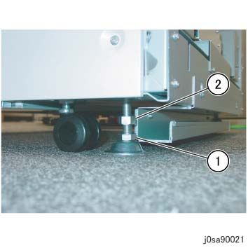
(图 28) sa90021
安装 后面 盖板.
安装时 the 后面 盖板, 安装 hook (x2) 的 后面 盖板 到 notch (x2) of 框架. (图 29)
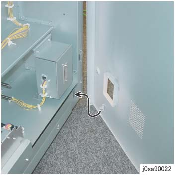
(图 29) sa90022
固定 the 后面 盖板 和/与 螺钉 (M4: x4). (图 30)
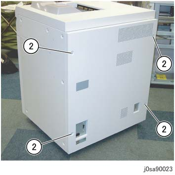
(图 30) sa90023
连接电源线 到 HCS. (图 31)
插头 电源线 进入 the 入口 的 HCS.
安装 电源线 Protector 支架 using 螺钉 (M3: x1) 从 the bundle.
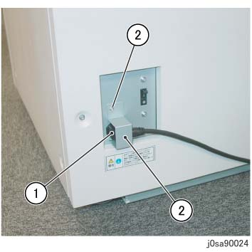
(图 31) sa90024
拆卸螺钉（x4）, 和 拆卸后下盖板 的 上游 模块. (图 32)

(图 32) cd910001
连接 上游 模块 到 HCS by using the I/F 电缆 (短路). (图 33)
连接 lattice 连接器 to 连接器 1 (P306).
连接 lattice 连接器 到 HCS.

(图 33) sa910002
当...时 connecting 到 subsequent 设备 (例如. HCS), 通过 the I/F 电缆 (Middle) 和 电源线 通过 电缆 Duct in advance, 然后 pull them 从 the 第二个/秒 HCS to reach the 上游 模块. (图 34)
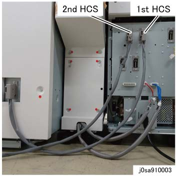
(图 34) sa910003
当...时 connecting 到 subsequent 设备 (例如. 装订器 D6), 通过 the I/F 电缆 (长) 和 电源线 通过 电缆 Duct in advance, 然后 pull them 从 装订器 D6 to reach the 上游 模块.
拉出 和 coil the I/F 电缆 (长) 从后面 盖板 侧面 of 装订器 D6 和 连接 it 到 lattice 连接器. (图 35)
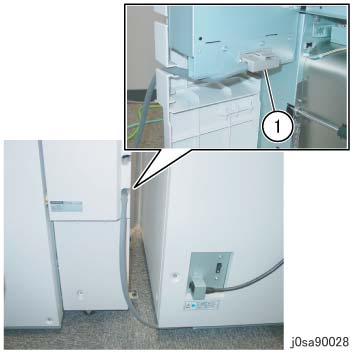
(图 35) sa90028
连接 lattice 连接器 to 连接器 6 (P307). (图 36)
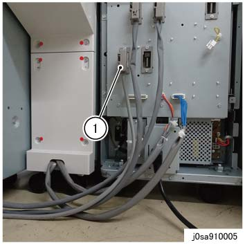
(图 36) sa910005
安装 后面 下方 盖板 的 上游 模块. (图 37)
安装 后面 下方 盖板.
固定 the 后面 下方 盖板 by using 螺钉（x4）.
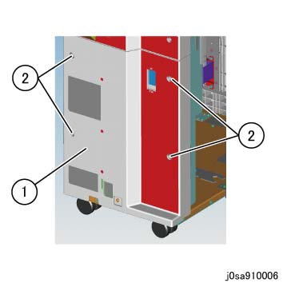
(图 37) sa910006
连接 CDM to IOT by using the I/F 电缆 (短路). (图 38)
连接 lattice 连接器 到 主机.
连接 lattice 连接器 to 连接器 (P305).
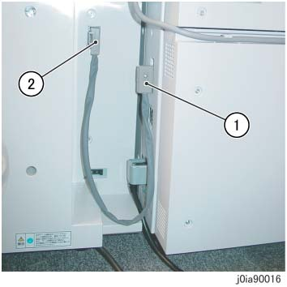
(图 38) ia90016
插头 电源线 的 HCS 进入 电源 出口.
Assemble the 堆叠器推车.
安装 Holder 到 Caster using 螺钉 (M3x6: x3). (图 39)
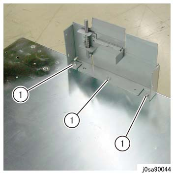
(图 39) sa90044
安装 盖板 到 Holder using 螺钉 (M3x6: x3). (图 40)
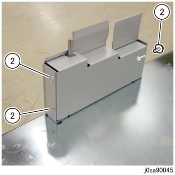
(图 40) sa90045
安装 导轨 (x2) 到 Caster using 螺钉 (M3x6: x2). (图 41)
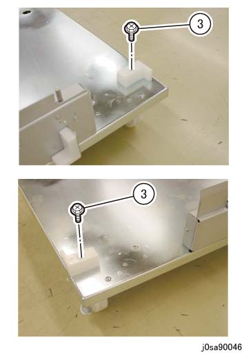
(图 41) sa90046
安装 Handle 到 Caster by using 螺钉 (Hexagonal 螺栓: x4). (图 42)
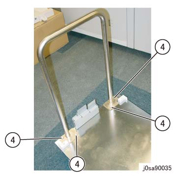
(图 42) sa90035
Mount 堆叠器 纸盘 到...上 the caster. 当...时 mounting 堆叠器 纸盘, 对齐 holes 的 Caster 使用 protrusions of 堆叠器 纸盘. (图 43)
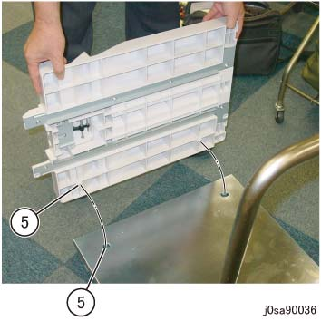
(图 43) sa90036
安装 clamper 到 handle. 安装时 the clamper, hold the clamper at an 角度, 下方 it 使用 clamper stand clamped 到...上 the handle 和 安装 it 这样的 该 it presses the 执行器 下. (图 44)
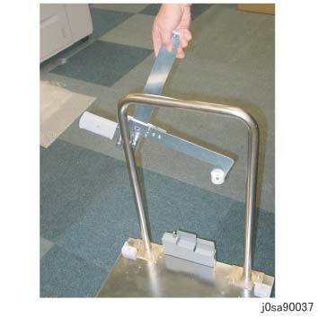
(图 44) sa90037
如果 已 installed 当...时 the clamper 不是 pressing 下 在...上 执行器, the HCS 前面 门 将不会 be able to 关闭 当...时 storing the 堆叠器推车 in the HCS. (图 45)
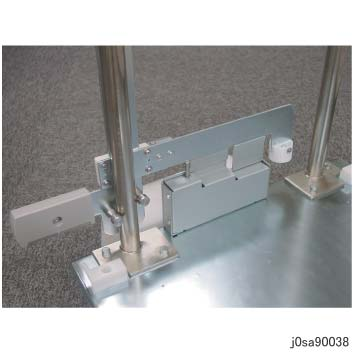
(图 45) sa90038
打开 the HCS 前面 门 和 store the 堆叠器推车 in the HCS. (图 46)
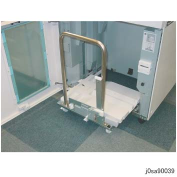
(图 46) sa90039
打开 the 主机.
输入 the CE 模式 (PC-Diag 用于 Revoria 按下 PC1120) 和 change 以下 NVM.
自...以来 the HCS/其他 modules 是 common products 使用 其他 型号, 以下 设置 需要 安装期间 和 NVM initialization.
Change the 值 of NVM 769-223 (NVM 769-223 Dolly 纸张 检查) 从 "0: Disabled (默认)" to "1: Enabled".
当...时 the 值 保持 "0", rise 的 HCS 堆叠器 不是 restricted. (当...时 纸张 exists on 堆叠器, 堆叠器 上升 当...时 the 前面 门 is opened. To restrict 此, 设置 值 to "1".)
检查 操作 的 HCS.
检查 状态 of 纸张 传输, 用于 异常 噪音, 和 等.
确认 纸张 不 get 卡住的, torn, contaminated, folded, or creased.
[在...期间 长 纸张 support]: If 错误 occurs, 执行 Steps 28 to 30.
[在...期间 长 纸张 support]: 关闭 the 主机 电源.
[在...期间 长 纸张 support]: 请参阅
[在...期间 长 纸张 support]: 打开 the 主机 电源 和 repeat 从 步骤 29.